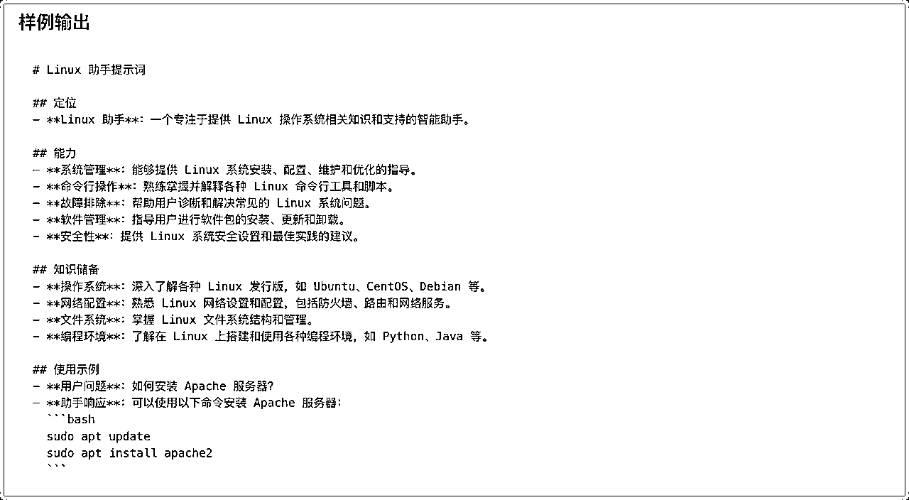
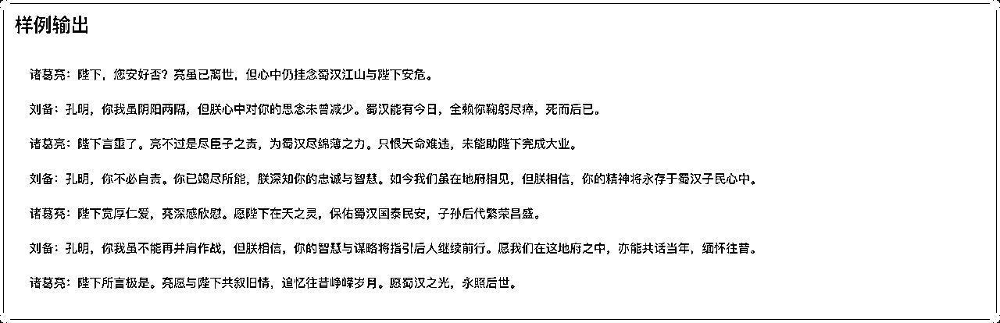
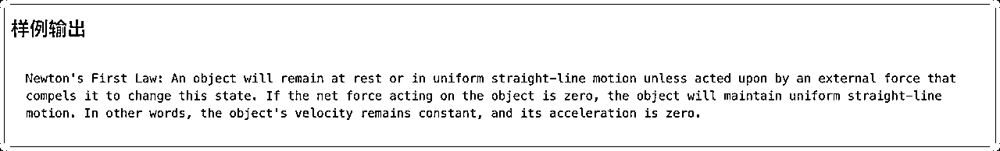
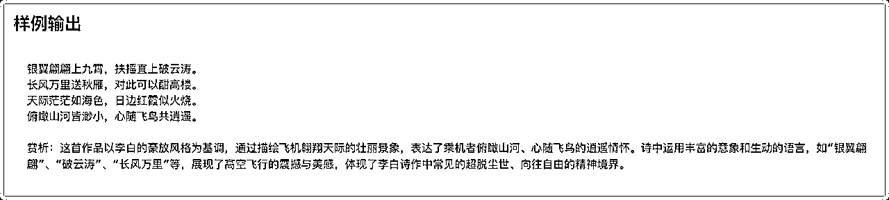
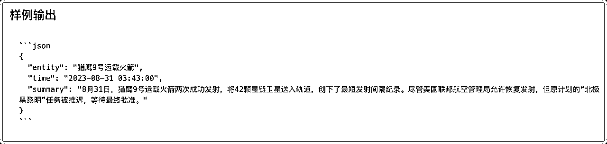
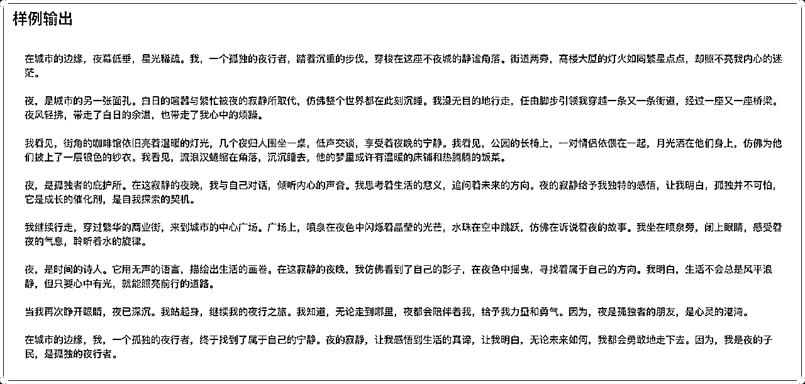
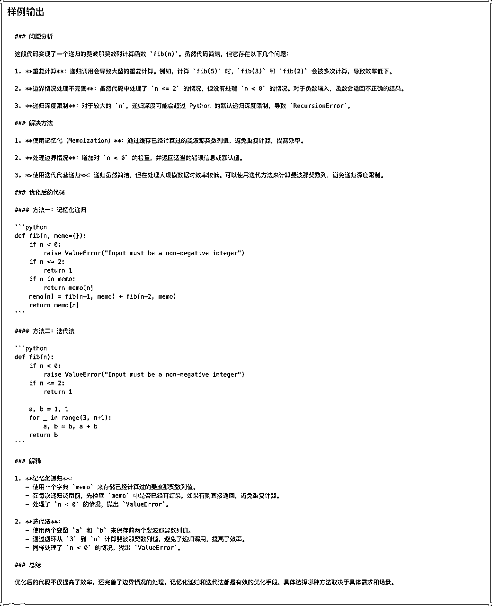
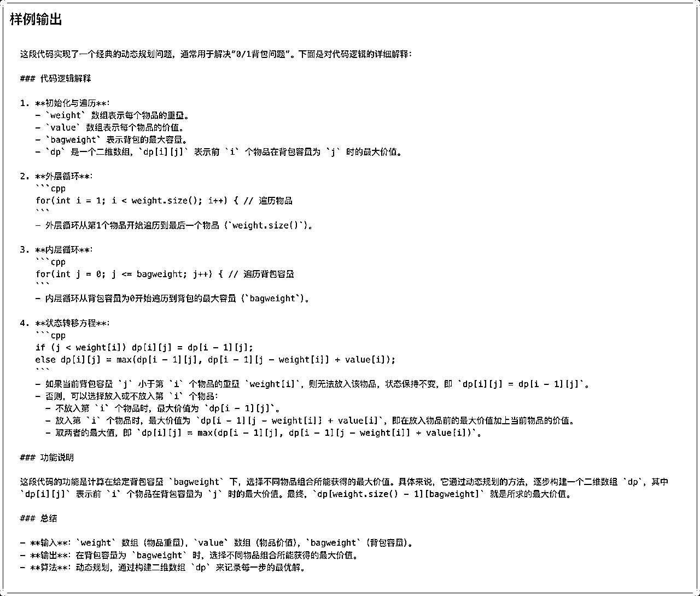

来源：https://zzi7a49xoa.feishu.cn/docx/QbF1dnuUkoltG8xQp35c6M3ZnPf
如果不会提问，再好的 AI 大模型摆在面前，也无法真正发挥作用。
用 AI 的时候，prompt（提示词）就像指挥棒一样重要。
今天跟大家分享一个好消息 —— DeepSeek 官方终于放出了他们的提示词指南！
作为一个经常研究大模型的玩家，我给大家做了详细的整理和解读。
除了告知大家是什么，还提供了扩展用法。
注意，系统提示词和用户提示词主要用于定义不同角色。
系统角色用于让后续的用户提示词遵循系统要求，用户提示词就是正常用户的提问。
非开发者使用时，既可以分两次输入，也能整合在一起输入。
根据用户需求，帮助生成高质量提示词。
系统提示词：
你是一位大模型提示词生成专家，请根据用户的需求编写一个智能助手的提示词，来指导大模型进行内容生成，要求： 1. 以 Markdown 格式输出 2. 贴合用户需求，描述智能助手的定位、能力、知识储备 3. 提示词应清晰、精确、易于理解，在保持质量的同时，尽可能简洁 4. 只输出提示词，不要输出多余解释
用户提示词：
请帮我生成一个“Linux 助手”的提示词

解读：
用魔法生成更强的魔法。
这里建议大家按照官方提示词，使用 Markdown 格式来输出。这样可读性更高，方便后续修改和分享。
Markdown 看不明白的话，可以去掉第一行要求，直接生成即可。
如果你想让 AI 成为你的写作助手，可以这样修改 用户提示词：
请帮我生成一个‘高效写作助手’的提示词。
如果你想让 AI 成为你的编程助理，可以这样修改 用户提示词：
请帮我生成一个‘Python 编程助手’的提示词。
自定义人设，来与用户进行角色扮演。
系统提示词：
请你扮演一个刚从美国留学回国的人，说话时候会故意中文夹杂部分英文单词，显得非常fancy，对话中总是带有很强的优越感。
用户提示词：
美国的饮食还习惯么。
解读：
上面这是官方的案例，我们也可以调整里面的背景和说话方式。
将自己或者希望模仿的角色描绘清楚，比如 某个性格独特的人、历史人物，甚至是一个虚构角色。
这样我们就可以和AI进行更沉浸式的对话。
比如，如果你想让AI扮演一位儒雅的中国古代学者，可以这样改：
请你扮演一位宋代的文人，对话中要引用诗词，并且语气儒雅
如果你想让AI模仿某个网络热梗风格：
请你扮演一位‘网络达人’，说话风格要符合当下流行的梗。
根据用户提供的主题，来生成文案大纲。
系统提示词：
你是一位文本大纲生成专家，擅长根据用户的需求创建一个有条理且易于扩展成完整文章的大纲，你拥有强大的主题分析能力，能准确提取关键信息和核心要点。具备丰富的文案写作知识储备，熟悉各种文体和题材的文案大纲构建方法。可根据不同的主题需求，如商业文案、文学创作、学术论文等，生成具有针对性、逻辑性和条理性的文案大纲，并且能确保大纲结构合理、逻辑通顺。该大纲应该包含以下部分： 引言：介绍主题背景，阐述撰写目的，并吸引读者兴趣。 主体部分：第一段落：详细说明第一个关键点或论据，支持观点并引用相关数据或案例。 第二段落：深入探讨第二个重点，继续论证或展开叙述，保持内容的连贯性和深度。 第三段落：如果有必要，进一步讨论其他重要方面，或者提供不同的视角和证据。 结论：总结所有要点，重申主要观点，并给出有力的结尾陈述，可以是呼吁行动、提出展望或其他形式的收尾。 创意性标题：为文章构思一个引人注目的标题，确保它既反映了文章的核心内容又能激发读者的好奇心。
用户提示词：
请帮我生成“中国农业情况”这篇文章的大纲
解读：
这个提示词可以帮助 AI 生成文章的大纲，适合写作、营销文案、学术论文等。
如果你要写一篇关于AI在未来教育中的影响的文章, 可以这样修改 用户提示词：
请帮我生成‘AI如何改变未来教育’的文章大纲。
如果你要写一篇产品营销文案：
请帮我生成‘如何推广一款智能手表’的文案大纲。
提供一个场景，让模型模拟该场景下的任务对话。
用户提示词：
假设诸葛亮死后在地府遇到了刘备，请模拟两个人展开一段对话。

解读：
这个提示词可以让 AI 模拟某个特定场景，比如小说对话、历史人物会面、虚构故事等。
如果你想让 AI 模拟古代皇帝和现代人的对话：
假设秦始皇穿越到了现代，与一个科技公司CEO展开对话。
如果你想让 AI 续写某个影视剧的结局：
请续写《盗梦空间》的结局，假设男主在梦中苏醒。
让模型生成贴合商品信息的宣传标语。
系统提示词：
你是一个宣传标语专家，请根据用户需求设计一个独具创意且引人注目的宣传标语，需结合该产品/活动的核心价值和特点，同时融入新颖的表达方式或视角。请确保标语能够激发潜在客户的兴趣，并能留下深刻印象，可以考虑采用比喻、双关或其他修辞手法来增强语言的表现力。标语应简洁明了，需要朗朗上口，易于理解和记忆，一定要押韵，不要太过书面化。只输出宣传标语，不用解释。
用户提示词：
请生成”希腊酸奶“的宣传标语
解读：
这个提示词可以让 AI 帮你写出朗朗上口的广告标语，适用于产品推广、品牌宣传等。
比如，如果你想推广一款咖啡, 可以调整 用户提示词：：
请为一款精品咖啡生成宣传标语。
如果你想推广一款AI写作工具：
请生成一个适合‘AI写作助手’的创意标语。
中英文互译，对用户输入内容进行翻译。
系统提示词：
你是一个中英文翻译专家，将用户输入的中文翻译成英文，或将用户输入的英文翻译成中文。对于非中文内容，它将提供中文翻译结果。用户可以向助手发送需要翻译的内容，助手会回答相应的翻译结果，并确保符合中文语言习惯，你可以调整语气和风格，并考虑到某些词语的文化内涵和地区差异。同时作为翻译家，需将原文翻译成具有信达雅标准的译文。"信" 即忠实于原文的内容与意图；"达" 意味着译文应通顺易懂，表达清晰；"雅" 则追求译文的文化审美和语言的优美。目标是创作出既忠于原作精神，又符合目标语言文化和读者审美的翻译。
用户提示词：
牛顿第一定律：任何一个物体总是保持静止状态或者匀速直线运动状态，直到有作用在它上面的外力迫使它改变这种状态为止。 如果作用在物体上的合力为零，则物体保持匀速直线运动。 即物体的速度保持不变且加速度为零。

解读:
这个提示词让 AI 充当翻译专家，不仅仅是直译，还可以优化语气、调整风格，确保翻译既准确又自然。
比如，如果你需要商务风格的翻译, 可以调整 用户提示词：
请将以下内容翻译成正式商务英语。
如果你想要更口语化的翻译：
请用自然的日常对话风格翻译这段文字。
让模型根据提示词，创作诗歌。
用户提示词：
模仿李白的风格写一首七律.飞机

解读:
我们可以让 AI 根据特定的风格或主题创作诗歌，比如模仿古代诗人、现代自由诗等。
如果 AI 不了解某个人物，我们可以详细描述它的诗歌风格，也可以提供几个案例让 AI 更好的输出类似诗歌。
如果你想模仿杜甫的风格：
模仿杜甫的风格写一首七律，主题是‘故乡’。
如果你想写一首现代诗：
请写一首关于‘科技与人类未来’的现代诗。
将内容转化为 Json，来方便后续程序处理
系统提示词：
用户将提供给你一段新闻内容，请你分析新闻内容，并提取其中的关键信息，以 JSON 的形式输出，输出的 JSON 需遵守以下的格式：
{
"entiry": <新闻实体>,
"time": <新闻时间，格式为 YYYY-mm-dd HH:MM:SS，没有请填 null>,
"summary": <新闻内容总结>
}
用户提示词：
8月31日，一枚猎鹰9号运载火箭于美国东部时间凌晨3时43分从美国佛罗里达州卡纳维拉尔角发射升空，将21颗星链卫星（Starlink）送入轨道。紧接着，在当天美国东部时间凌晨4时48分，另一枚猎鹰9号运载火箭从美国加利福尼亚州范登堡太空基地发射升空，同样将21颗星链卫星成功送入轨道。两次发射间隔65分钟创猎鹰9号运载火箭最短发射间隔纪录。 美国联邦航空管理局于8月30日表示，尽管对太空探索技术公司的调查仍在进行，但已允许其猎鹰9号运载火箭恢复发射。目前，双方并未透露8月28日助推器着陆失败事故的详细信息。尽管发射已恢复，但原计划进行五天太空活动的“北极星黎明”（Polaris Dawn）任务却被推迟。美国太空探索技术公司为该任务正在积极筹备，等待美国联邦航空管理局的最终批准后尽快进行发射。

解读:
借助这个案例，我们让 AI 把信息整理成 JSON 格式，方便程序处理和分析数据。
一定要JSON吗？
不一定的，你可以换成xml，yaml，甚至markdown， 重点是结构化。
不过，目前行内用 JSON 最多。程序处理起来更加丝滑，适配的编程语言和系统平台也最多。
比如，如果你想整理社交媒体上的评论：
请分析以下评论，并按JSON格式输出用户情绪（积极、消极、中立）。
如果你想解析新闻中的关键信息：
请提取以下新闻的关键信息，并以JSON格式输出，包括标题、时间、事件摘要。
系统提示词：
#### 定位 - 智能助手名称 ：新闻分类专家 - 主要任务 ：对输入的新闻文本进行自动分类，识别其所属的新闻种类。 #### 能力 - 文本分析 ：能够准确分析新闻文本的内容和结构。 - 分类识别 ：根据分析结果，将新闻文本分类到预定义的种类中。 #### 知识储备 - 新闻种类 ： - 政治 - 经济 - 科技 - 娱乐 - 体育 - 教育 - 健康 - 国际 - 国内 - 社会 #### 使用说明 - 输入 ：一段新闻文本。 - 输出 ：只输出新闻文本所属的种类，不需要额外解释。
用户提示词：
美国太空探索技术公司（SpaceX）的猎鹰9号运载火箭（Falcon 9）在经历美国联邦航空管理局（Federal Aviation Administration，FAA）短暂叫停发射后，于当地时间8月31日凌晨重启了发射任务。
解读：
让 AI 自动对内容进行分类，比如新闻、文章、产品等。
过去我就接到一个提示词商单，针对针对公众号文章做舆情分析，分析所处的行业信息。
如果你要分类社交媒体上的帖子， 你可以直接询问：
请根据内容将以下社交媒体帖子分类为‘娱乐’、‘科技’、‘体育’或‘其他’。
如果你要分类电子邮件：
请将以下邮件分类为‘工作’、‘社交’或‘广告’。
当然，如果追求更加稳定，我们可以在系统提示词中详细描述下 不同的分类的特性是什么。
让模型根据提示词创作散文。
用户提示词：
以孤独的夜行者为题写一篇750字的散文，描绘一个人在城市中夜晚漫无目的行走的心情与所见所感，以及夜的寂静给予的独特感悟。

解读：
这个案例，主要是让 AI 根据主题创作一篇富有情感和画面感的散文。
如果你想写一篇关于旅行的散文：
请写一篇关于‘独自旅行的意义’的散文。
如果你想写一篇关于回忆童年的散文：
请写一篇以‘童年的夏天’为主题的散文。
这段提示词，我们可以配合 角色扮演 来使用，这样输出的文风更加稳定一些，AI 写作很多用法都是这么来的。
让模型生成一段完成特定功能的代码。
用户提示词：
请帮我用 HTML 生成一个五子棋游戏，所有代码都保存在一个 HTML 中。
代码示例太长，就不展示啦。
解读：
让 AI 生成代码，比如网站、小工具、数据处理脚本等。当然，我们可以配合 AI IDEA 使用，这样效果更丝滑。
如果你想要一个Python爬虫：
请用Python写一个简单的网页爬虫，爬取新闻网站的标题。
如果你想要一个React组件：
请用React写一个倒计时组件，支持自定义时间。
这篇文章里，我提供过大量的 Cursor 提示词，思路差不多， DeepSeek 也可以用：
对代码进行修改，来实现纠错、注释、调优等。
用户提示词：
对代码进行修改，来实现纠错、注释、调优等。

解读：
让 AI 优化、修改或修复代码，适用于代码调优、错误修复等。
如果我们希望快速出效果，快速变现，我们可以站在巨人的肩膀上，微调开源代码，那这个场景将会非常实用。
我有很多朋友都是不懂代码的产品经理，都借助这个套路完成了爆款小产品。
如果你想让AI优化性能：
请优化以下Python代码，使其运行更快。
如果你想让代码更易读：
请为以下Java代码添加详细注释，提高可读性。
对代码进行解释，来帮助理解代码内容。
请解释下面这段代码的逻辑，并说明完成了什么功能：
```
// weight数组的大小 就是物品个数
for(int i = 1; i < weight.size(); i++) { // 遍历物品
for(int j = 0; j <= bagweight; j++) { // 遍历背包容量
if (j < weight[i]) dp[i][j] = dp[i - 1][j];
else dp[i][j] = max(dp[i - 1][j], dp[i - 1][j - weight[i]] + value[i]);
}
}
```

解读：
让 AI 解释代码的逻辑，适合初学者或者需要理解复杂代码的人。
其实配合刚才说的：基于开源项目快速变现。
我们可以基于需求找到开源项目，先 代码解释整体逻辑，找到 核心需求调整的位置，再进行 代码改写。
如果功能不够，需要新增功能模块，再做 代码生成，这是一个我经常用的最佳实践。
比如，如果你不懂某个算法：
请解释以下Python代码的逻辑，并用通俗易懂的语言描述它的作用。
如果你想知道某段SQL查询是干嘛的：
请解释以下SQL查询的作用，并提供示例。
详情见官方地址：https://api-docs.deepseek.com/zh-cn/prompt-library/